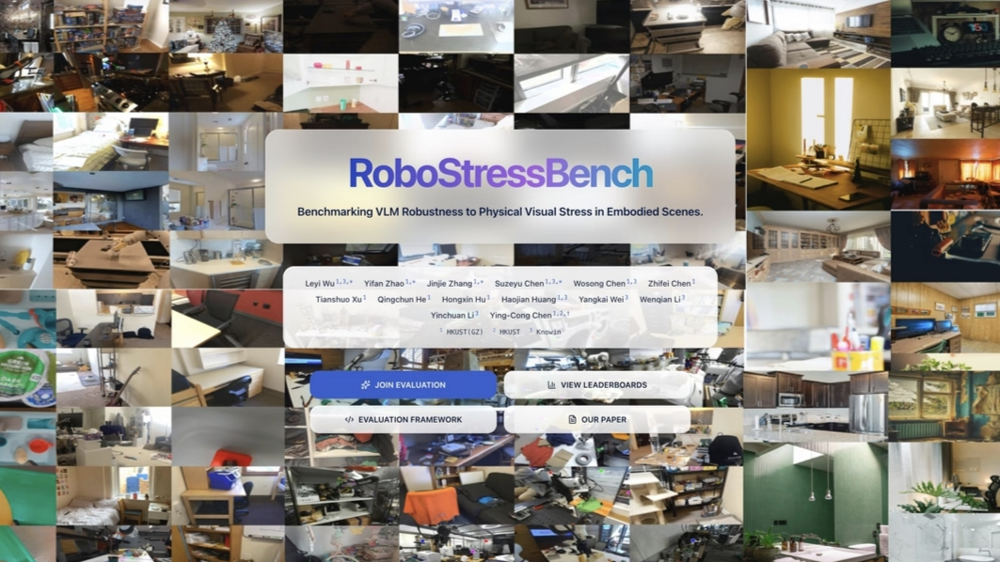
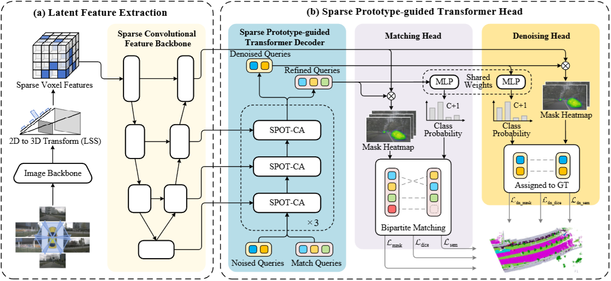

About Me
I am currently a Master of Science candidate at The Hong Kong University of Science and Technology (Guangzhou), working under the supervision of Prof. Ying-Cong Chen. I completed my undergraduate studies in Management Information Systems at Beijing Jiaotong University, where I was mentored by Prof. Jing Luan and graduated in 2024.
My research interests lie in building scalable, physically grounded, and self-improving embodied AI systems that generate, execute, verify, and refine robot programs toward generalizable manipulation in complex real-world environments:
- 🧬 Synthetic Simulation & Scalable Data for Embodied AI
- 🔧 Tool-Integrated Perception & Geometric Reasoning
- 🕹️ Interactive Feedback & Long-horizon Robot Manipulation
Research Experience

SPOT-Occ: Sparse Prototype-guided Transformer for Camera-based 3D Occupancy Prediction
Professional Experience
Knowin.ai
Oct 2025 - Present
Robotics Algorithm Engineering Intern, Foundation Model / Multimodal LLM Team
- Focused on synthetic data generation and evaluation automation for embodied AI and real-world robotic deployment.
- Developed pipelines for generating, filtering, and validating task-oriented synthetic data.
- Supported automated evaluation of multimodal large models under robotics-relevant scenarios.
- Participated in on-device deployment, testing, and debugging of large models on real robot platforms.